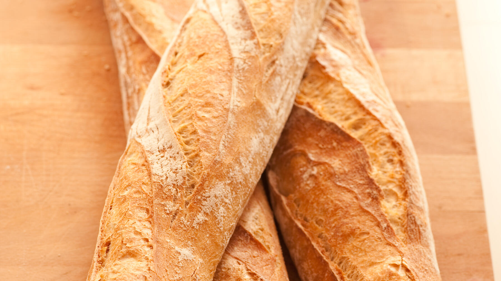

Zurück zur Übersicht
Magisches Baguette
Ohne Kneten und ohne Küchenmaschine: Der Teig wird nur verrührt und darf zwei Stunden gehen. Eine Portion entspricht einem großen Baguette.
- Zeit
- 2 Std. 30 Min.
- Schwierigkeit
- leicht
- Kategorie
- Brot & Brötchen
- Ernährung
- vegan
Zutaten
Portionen
- 10 gFrische Hefe
- 1 PriseZucker
- 300 mlWasser
- 380 gMehl Type 550
- 1 TLSalz
- Mehl für die Arbeitsfläche
Zubereitung
- Die Hefe mit dem Zucker im Wasser auflösen. Mehl und Salz dazugeben und mit einem Kochlöffel kurz verrühren, bis alles verbunden ist.
- Den Teig abdecken und 2 Stunden bei Zimmertemperatur gehen lassen.
- Den Backofen auf 240 °C Umluft vorheizen und eine Schüssel mit Wasser hineinstellen.
- Reichlich Mehl auf die Arbeitsfläche geben und den Teig vorsichtig daraufschütten, ohne zu viel Luft herauszudrücken. Mit Mehl bestreuen.
- Mit einer Teigkarte in 2 oder 3 gleich große Stücke teilen und vorsichtig auf ein Baguettebackblech legen. Ein normales Blech geht auch.
- Etwa 20 Minuten backen.
Meine Ergänzung: Bei 240 °C Umluft mit einer Wasserschüssel im Ofen etwa 20 Minuten backen.
Tipp: Ergibt 2 große oder 3 kleine Baguettes. Passt zum Grillen, zum Brunch oder zur Suppe.